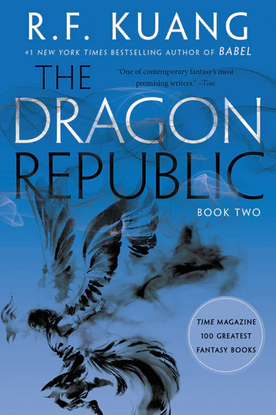

"Power is not a weapon you wield; it is an abyss that swallows you whole."
R.F. Kuang returns with a scorching, high-stakes political sequel in *The Dragon Republic*. Following the cataclysmic events of the first novel, Rin finds herself shattered, addicted to opium to suppress the divine voice of the Phoenix, and fleeing across the sea into volatile military alliances.
The narrative expands grandly into complex naval warfare, political betrayal, and scathing critiques of colonialism and revolutionary hypocrisy. Rin's journey forces her to confront not only external tyrants but the terrifying depths of her own capacity for violence and destruction.
A masterclass in dark epic fantasy escalation that sharpens the blade of an already brilliant series.